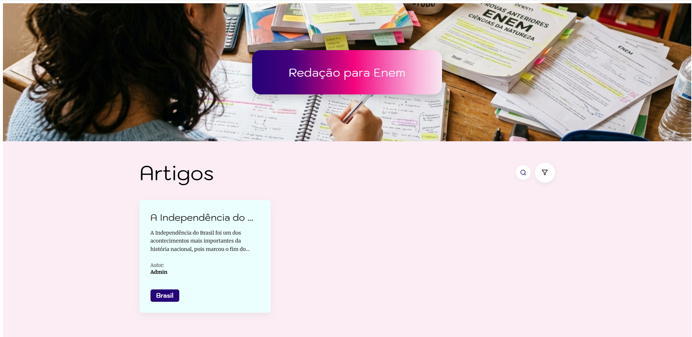

Oficina do Texto
API RESTful em Go, estruturada em camadas (handlers, services, repositories), com autenticação JWT e banco PostgreSQL hospedado no Supabase. Containerizada com Docker e publicada no Google Cloud Run, usando a Vercel como proxy reverso para reduzir a latência das requisições do front-end.